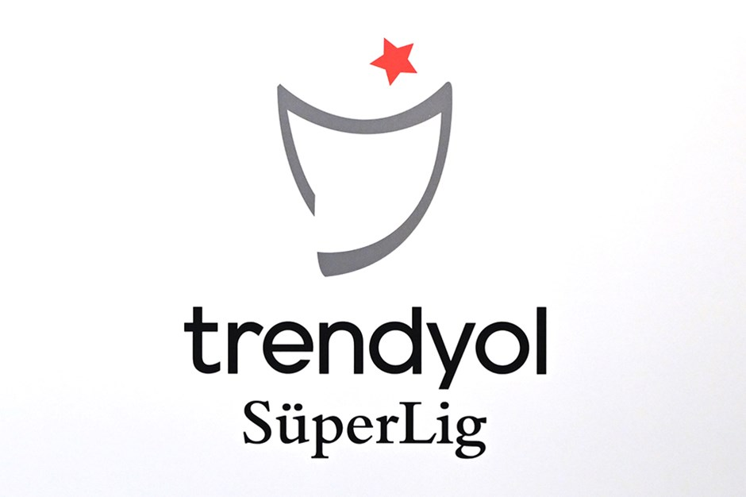

2024 Süper Lig sezonuna dair güncel haberler ve bilgiler
2024 Süper Lig sezonunda liderlik mücadelesi oldukça çekişmeli geçiyor. İlk üç sıradaki takımlar arasındaki puan farkı çok az.
Daha fazla bilgi için Türkiye Futbol Federasyonu resmi sitesini ziyaret edebilirsiniz.
Bu yıl Süper Lig'in gol krallığı yarışı yıldız oyuncular arasında çekişmeli geçiyor. Hücum oyuncuları sahada müthiş performans sergiliyor.
Detaylı istatistikler için Transfermarkt adresini ziyaret edin.
2024 sezonu, Süper Lig'de önemli transferlere sahne oldu. Takımlar, kadrolarını güçlendirmek için yıldız oyuncuları transfer etti.
Daha fazla transfer haberi için Transfermarkt sitesini ziyaret edebilirsiniz.